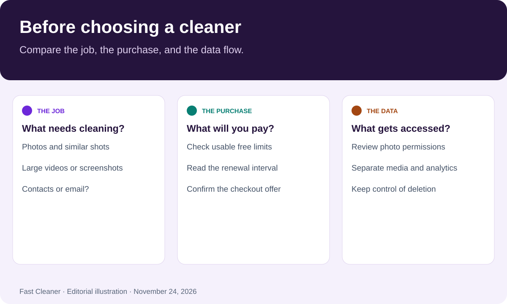
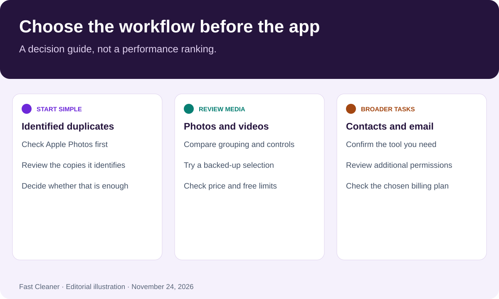
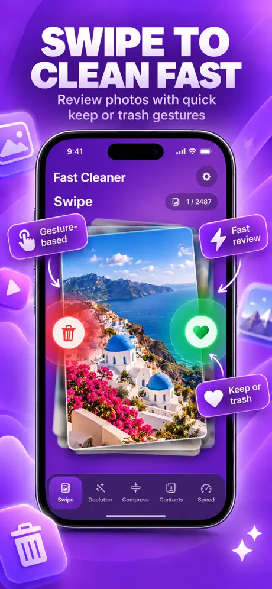

Is Cleanup worth considering?
Cleanup is worth considering if you want to review unwanted photos, videos, contacts, or email in one app. Before paying, check what you can actually clean for free, the renewal price you are offered, and the permissions each feature needs. If your only task is merging duplicates already identified by Apple Photos, start with that built-in option.
A storage warning can make a quick cleanup sound appealing. The useful question is whether an app helps you choose what to remove at a price and with data practices you understand.
About this review: Fast Cleaner publishes this article and is one of the alternatives below. We reviewed published store listings, policies, and Apple guidance on November 24, 2026. We have not run a hands-on comparison, measured detection accuracy, or verified each app’s checkout offers.


What does Cleanup do?
This review covers Cleanup: Phone Storage Cleaner, App Store ID 1510944943. The current listing names DEEP FLOW SOFTWARE SERVICES – FZCO as the seller; it also carries older Codeway branding. Use the app ID when comparing products, because several cleaners have similar names.
Its listing describes duplicate and similar-media cleanup, video compression, contacts tools, and email cleanup. Those are developer descriptions, rather than functions we tested. Review the permissions for the particular tools you intend to use; cleaning photos and connecting an email account are different decisions.
Start with Settings → General → iPhone Storage to see what is taking up space. If downloaded films or another app’s data dominate, a photo-focused cleanup may not address the main problem. Our iPhone storage guide covers those other categories.
Is Cleanup free, and what does it cost?
Cleanup is free to download, with in-app purchases. That does not establish how many files you can remove without paying. We have not independently verified its current free-action limits.
The US store listing exposes several weekly purchase entries, from $5.95 to $11.99, plus a $29.99 yearly entry. These are catalog prices, not a promise that every person receives every offer. Its promotional trial wording and billing descriptions also need to be checked against the actual purchase screen.
Read the amount due today, trial end date, renewal price, billing interval, and cancellation route. Save the terms shown on your device. Compare the cost for how often you expect to clean, rather than comparing a weekly amount with another app’s lifetime price.
If you only want one cleanup, first establish whether you can complete it with the free features or Apple Photos. A recurring plan may suit repeated use, but its value depends on the tools you actually need.
Is Cleanup safe to use?
A store listing and privacy policy can help you evaluate Cleanup, but they cannot certify its security. Separate three questions: which files it can access, where media processing happens, and what other data it collects.
Cleanup’s privacy policy, updated August 13, 2026, says its media and contacts processing happens on-device without storing those files on its servers. It separately describes technical, usage, and marketing data. Nearby broader wording about storing user content makes the policy less clear; that ambiguity alone does not establish that photos are uploaded.
For a practical check, review the requested photo access, compare the store privacy label with the policy, and inspect the removal confirmation. Granting access to selected photos can limit what an app can find. Access to contacts or email should fit a tool you chose to use.
Apply the same standard to Fast Cleaner. Our website policy describes on-device media analysis and separate limited Firebase analytics and diagnostics. The App Store privacy label retrieved during this review said “Data Not Collected.” The difference needs clarification for the relevant platform and version; we do not use that label to claim zero data collection.
For more detail, use our five checks before installing a photo cleaner and guide to on-device processing and analytics.

Does Cleanup actually free up storage?
Removing unwanted media can free storage, but the size of the result depends on your files and what you choose to keep. This review does not establish how accurately Cleanup identifies matches, how fast it scans, or how much space it recovers.
Try a small, backed-up selection first. Check whether grouped pictures are genuine duplicates or different moments worth preserving. Compare any compressed video with its original before approving removal; a smaller export can involve a quality tradeoff.
Then return to the same iPhone Storage screen to check the result. Keeping an original and a smaller export can use more space than keeping the original alone. If a warning remains, follow our storage-full-after-deletion guide.
Keep an independent copy of irreplaceable media. A photo visible on another device using the same synced library is not necessarily a separate backup. Consult Apple’s iCloud storage guidance before removing synced content.
How do the alternatives compare?
The following options offer different buying choices. This is a comparison of published information, not a performance ranking or a claim about market share. Prices are US listing examples checked November 24, 2026.
| Option | Reason to consider it | Purchase or permission check |
|---|---|---|
| Apple Photos | Merge duplicates Photos has already identified, without installing a separate cleaner. | Check whether its built-in review solves your task before buying another app. |
| Cleanup | A listed set of media, contacts, and email tools. | Verify the free actions, renewal interval, and permissions for the features you want. |
| Fast Cleaner | Photo and video review with listed monthly and lifetime purchase options. | $4.99 monthly and $14.99 Lifetime Pro Access are listed. Check included features and current free limits. |
| Clever Cleaner | A listing that describes free daily limits and optional paid upgrades. | Listed examples: $6.99 weekly with trial and $39.99 lifetime. Do not assume every tool is unlimited for free. |
| Cleaner Kit by BPMobile | Another option for comparing a broader cleanup toolkit. | Check the purchase screen: generic catalog names do not establish the billing interval. |
| Cleaner Guru | Listed media, contacts, and email cleanup functions. | Verify which features are paid and how the selected Premium or Unlimited Access offer renews. |
Confirm the seller as well as the name: the Cleaner Kit here is App Store ID 1194582243 by BPMobile, and Cleaner Guru is 1476380919 by GM UniverseApps Limited. Clever Cleaner is 1666645584 by CleverFiles Inc.


When does Fast Cleaner fit?
Fast Cleaner is an alternative to explore when your main job is reviewing duplicate and similar photos, screenshots, or large videos, and you want to compare monthly access with a listed lifetime purchase. Its App Store description also includes video compression. Check the features available in your version before choosing a plan.
We do not have evidence here that it is faster, more accurate, or safer than Cleanup. The choice should come from the workflow, current terms, and your review of the disclosures. Apple Photos may be sufficient for identified duplicates; Cleanup or another app may suit a broader set of tasks.
 Compare similar shots
Compare similar shots
Choose what to keepSee our guides to Apple Photos and duplicate-photo review and compressing videos while checking quality before deciding.
Review your media with Fast Cleaner
Check its current features, privacy information, and purchase terms on the App Store.
How do you cancel Cleanup?
For an Apple-billed subscription, follow Apple’s cancellation instructions:
- Open Settings and tap your name.
- Tap Subscriptions, then select Cleanup.
- Tap Cancel Subscription and check the confirmation or expiration message.
If you purchased through a website or another billing provider, use that provider’s process. Check the receipt to identify who billed you. Do not rely on deleting an app as your cancellation step.
Common questions
Is Cleanup really free?
It is free to download with in-app purchases. The exact actions available without payment and any trial eligibility need to be checked in the app; this review did not test those limits.
Does Cleanup upload my photos?
Its policy states that media processing happens on-device without storing those media files on its servers. It describes other data collection separately and also contains broader content-storage wording. This review did not inspect network traffic or independently verify the implementation.
Do I need a cleaner to delete duplicate photos?
Not necessarily. Apple Photos can merge duplicates it identifies. A separate app is an option if its additional review tools fit your needs.
Is Fast Cleaner completely free on iPhone?
Fast Cleaner is free to download on iPhone and lists optional paid purchases. Check current free limits and the purchase screen rather than assuming all cleanup is unlimited.
Which cleaner is the best?
That depends on the task, usable free features, purchase terms, and your privacy requirements. We have not performed a controlled comparison that would justify naming a performance winner.
Sources and review method
We matched each app to its exact store ID and reviewed the linked US listings and policies on November 24, 2026. Listings can be cached, and offers change. Developer descriptions establish what is advertised, not measured accuracy, security, or storage savings.
Primary references include Cleanup’s App Store listing, Cleanup’s privacy policy, Fast Cleaner’s App Store listing, and the alternative listings linked in the table. Apple’s documentation supplies the built-in duplicate-merging and subscription-management guidance.
A future hands-on comparison would need the same device, app versions, and backed-up test library, with expected matches labelled before scanning. It would record false matches, review controls, free limits, processing time, and actual device-storage changes. None of those results is claimed here.